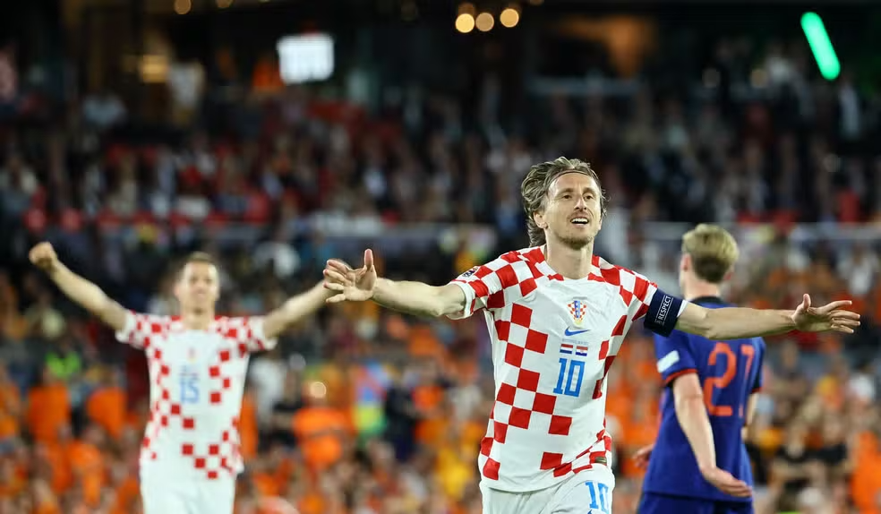

A primeira participação da Croácia na Eurocopa foi em 1996. A Croácia, que se tornou independente em 1991 após a dissolução da Iugoslávia, rapidamente se estabeleceu como uma força significativa no futebol internacional.

TÍTULOS
Até o momento, a Croácia não conquistou nenhum título na Eurocopa. Desde a sua primeira participação em 1996, a Croácia tem sido uma equipe competitiva no torneio, mas ainda não conseguiu ganhar o campeonato.
MELHORES MOMENTOS
A Croácia teve alguns momentos notáveis na Eurocopa 2024, apesar de enfrentar desafios difíceis durante a fase de grupos.